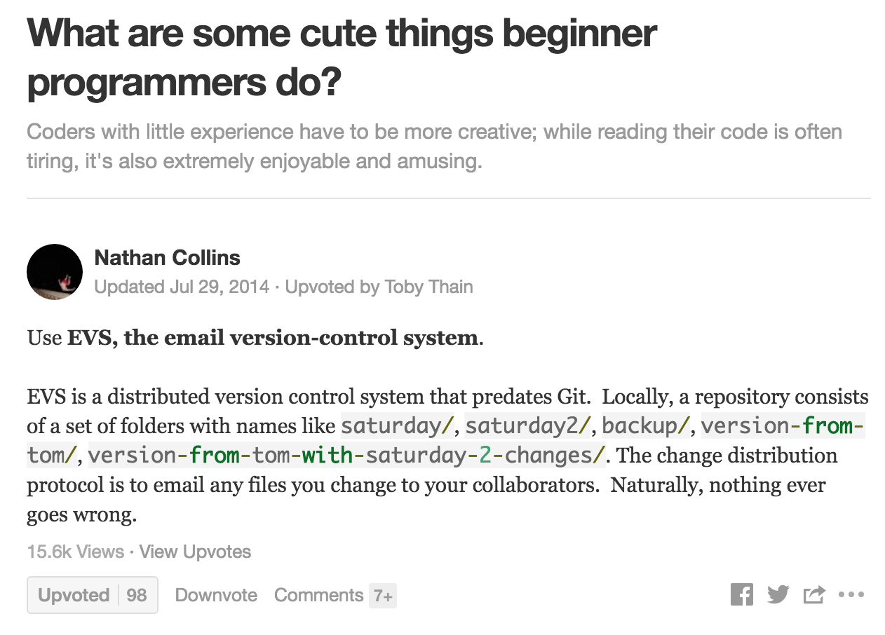
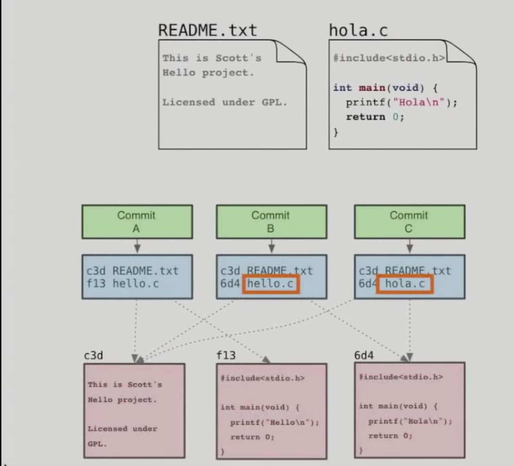

VCS
VCS
Video Games
Video Games
- Think of editing your code or document as playing a game
- Saving using Editor over writes previous save
- It's like saving in just one slot
- Can't go back to previous save
- What if current save is unwinnable
- Have to start again from beginning
Some Cute Things
Some Cute Things

Save As
Save As
- You can Save as a different file, maybe in different folder
- Multiple versions of same document becomes unmanageable
- Specially if there the number of files is large
- Even a simple project has a little more than 10k files
- Specially if there the number of files is large
- Version Control Systems do this and lot more for us
- If something goes bad, we can re visit older version
- VCS compresses files and provides a nice interface to manage different versions
Distributed Version Control System
Distributed Version Control System
- Helps in collaborating
- Everyone has the whole repository in his computer
- No need to checkout particular file (SVN)
- On merging all the commits are synchronized automatically
Git
Git
A little history
A little history
- Created by Linus Torvalds
- Some of the goals of the system were:
- Speed
- Simple Design
- Support for non-linear development (thousands of parallel branches)
- Fully Distributed
- Able to handle large projects like the Linux efficiently
Basics
Basics
- Snapshots, not Differences
- Nearly everything is local
- No need of network access for most of the work
- Git has integrity
- Everything is hashed
- Data can't get corrupted without git knowing it
- No central authority or canonical repository
The three states
The three states
- Working Directory
- Staging Area
- Repository
Summary

Basic Commands
Basic Commands
Clone/Init
Clone/Init
Creating a repository:
$ git init Initialized empty Git repository in /mount/pt/dummy/folder $ ls -a . .. .git
Cloning an existing repository
# clone over https git clone https://github.com/dummyUser/dummyRepo.git # clone local repo git clone ~/code/dummyRepo
Editing
Editing
Status
git statusTrack new files
git add newFile1 git add src*
Ignoring files (temp files, editor backup files, db configs)
.gitignoreSee what's changed
git diffUndo changes
git checkout -- file
Committing, Unstaging
Committing, Unstaging
Staged wrong file?
git reset HEAD fileCommit
# no flags: opens up editor for commit message git commit # pass in commit message directly git commit -m "message". # add and commit all files in previous commits git commit -a
Conflicts
Conflicts
<<<<<<< HEAD
<link type="text/css" rel="stylesheet" media="all" href="style.css" />
=======
<!-- no style -->
>>>>>>> master
Push/Pull
Push/Pull
Getting latest code
git pull [remote branch]Updating github
git push [remote branch]Remotes are just aliases.
git push https://github.com/dummyUser/dummyProject.git master
Undo/Redo
Undo/Redo
Want to see changes
git logUndo permanently
git reset --hard <ref/hash>Undo commit
git reset --soft <ref/hash>Hop to an old state briefly
git checkout <ref/hash>
Branching
Branching
Show all branches
git branchSwitch to another branch
git checkout <branch>Create a new branch
git branch <new branch name> # this doesn't switches you to the new branch git checkout -b <new branch name> #create branch and switch to it
Delete branch
# deleting local branch git branch -D <branchName> # deleting remote branch git push origin --delete <branchName>
Merging
Merging
Merge
masterinto your branchgit checkout <yourBranch> git merge master
- Resolve conflicts (if any)
- Send pull request
- Merge Squash (
git merge --squash): create a single commit on top of the current branch whose effect is the same as merging another branch
Demo
Demo
Visualize
Visualize
- Git Visualization
- git commit
- git branch
- git checkout <branch>
- git checkout <ref>
- git merge
Github tour
Github tour
- jQuery project
- clone url
- commits
- summary
- branches
- file
- blame
- history
- contributors
- License
Not So Basic Commands
Not So Basic Commands
Stash
Stash
Working on something and some urgent thing pops up
git stash #saves the work in the current branch- Branch out to another branch
- fix the urgent thing
- merge
- Checkout to old branch
Pop
git stash pop- Stash options:
git stash listgit stash applygit stash droppop=applylast +drop
Commit Graph
Commit Graph
$ git log --graph --decorate --oneline --all * 4d19eff Merge branch 'botTest' into alert_system | |\ | | * 5cb042b Merge branch 'master' of https://github.com/dummyUser/dummyProject into botTest | | |\ | * | \ 0e84ec7 Merge remote-tracking branch 'origin/botTest' into alert_system | |\ \ \ | | |/ / | * | | dd8a3c3 Merge branch 'master' of https://github.com/dummyUser/dummyProject into alert_system | |\ \ \ | | | |/ | | |/| | * | | c1d4e37 alert after crawling stage | * | | 3b9e0ec Merge branch 'alert_system' of https://github.com/dummyUser/dummyProject into alert_system | |\ \ \ | | * \ \ 39bebf9 Merge branch 'alert_system' of https://github.com/dummyUser/dummyProject into alert_system | | |\ \ \ | | * | | | bc9c280 alert for solr | * | | | | 735ef01 operand type fix | | |/ / / | |/| | | | * | | | ee4fe92 ntitle check | * | | | 329f26f removed normalize insertion | |/ / / | * | | 6b4b326 Merge branch 'alert_system' of https://github.com/dummyUser/dummyProject into alert_system | |\ \ \ | | * | | f0dfe17 alert for url creator script | * | | | 286d567 check for normalize table data
References
References
- Pointer to commit graph
Branches are references:
more .git/refs/headsHEAD: symbolic reference to current branchmore .git/HEAD- Tags, like branch, but never moves
FETCH_HEAD
Remotes
Remotes
Show all remotes
git remote -vAdding Remote
git remote add cd https://github.com/dummyUser/dummyProject.gitInspect
git remote show originRename
git remote rename origin cd
Fetch
Fetch
- Fetch branches and/or tags (collectively, "refs") from one or more other repositories
- Updates
.git/FETCH_HEAD git pull=git fetch+git mergegit diff FETCH_HEAD..master
Ranges
Ranges
^: Parent^^: Parent of parent
\~: nth parentgit reset --hard HEAD~10: revert to 10th parent ofHEAD
git diff master..HEAD: changes in current branch
Git Internals
Git Internals
.git structure
.git structure
$ tree -a -L 2 . ├── .git │ ├── COMMIT_EDITMSG │ ├── HEAD │ ├── branches │ ├── config │ ├── description │ ├── hooks │ ├── index │ ├── info │ ├── logs │ ├── objects │ ├── packed-refs │ └── refs └── a.txt
How files are stored
How files are stored
- Git doesn't store deltas, stores full files in compressed format.
- Hashes the file content and stores in a key-value pair.
git add filecompresses and stores the file in.git/objectsand updates.git/indexwith its checksum.
Everything is checksum
Everything is checksum
git add- checksum of content by SHA1 hash
- returns SHA
git commit- creates manifest, list of checksum of the content of files, like directory
as a
treeand stores hash of the tree in commit object treecan be recursive
- creates manifest, list of checksum of the content of files, like directory
as a
- 3 types of object:
- Commits
- Tree Object
- Blob Object
Overview of objects
Overview of objects

Commit Object
Commit Object
- Each commit object contains
- tree SHA
- parent(s) SHA
- date
- message
- etc
Eg
$ git show bb5802a68eeb67d3f7fe862c7204588c55bc0a62 --pretty=raw commit bb5802a68eeb67d3f7fe862c7204588c55bc0a62 tree 0cdbd3110b74919b5a4f4d6d9aaa92ac6d85d3c9 parent 1ce40e782f41a574fa4579247400275697351669 parent 96baa1e399c06e783d979d5811ee30113603e9da author anuja780 <anuja.gupta@coupondunia.in> 1467094050 +0530 committer GitHub <noreply@github.com> 1467094050 +0530 Merge pull request #107 from dummyUser/common_model_remove running camera automated
Tree Object
Tree Object
$ git ls-tree 0cdbd3110b74919b5a4f4d6d9aaa92ac6d85d3c9 100644 blob d7ece0cce6f53c128b536de6bf6e876bc9822b04 .gitignore 100644 blob c19bf7332ec175bea6fd8b2b83528fdc8720f200 .gitmodules 040000 tree c0216114247f276e981159cdbb9e42980cac622f PriceUpdate 100644 blob 3af5e70fa12587720a038200f2a11a7d26bc2e0f README.md 100644 blob e69de29bb2d1d6434b8b29ae775ad8c2e48c5391 __init__.py 100755 blob 3575fca7ccad71b07173dbb92f3774e2c6a6978e activateEnv.sh 040000 tree f34c19c303e460e41829c83c1c56b2ad5e95166b api 040000 tree e6e3194547dc8e2d73ce3e66916894c639a4cf0e apidoc 040000 tree 7027ba82e8c80f5a60cde068e22f44f339a2c596 automation 040000 tree 79a60abdbd27701e64eef969d8cdfd3bfb51e1c6 backend 040000 tree 2c3ce598bc6679c6012e46400f3231ac2c991123 classes 040000 tree a0d2bfe167358576aee258a338eef7d478f125be config 100755 blob e5f15d4b067d979ba8b99ddf933ce115fa294187 crawl.sh ...
Blob Object
Blob Object
$ git show --pretty=raw fa978b8c094bdc3a2fe812ed602db843a1292a92
#!/bin/bash
set -e
BASE_DIR="$( cd "$( dirname "${BASH_SOURCE[0]}" )" && pwd )"
#write out current crontab
crontab -l > mycron
#echo new cron into cron file
echo "#Server is at UTC and we want to run crawler wrt to IST, hence adjust accordingly" >> mycron
echo "# 00->18:30, do +3 for hours in peak hours"
echo "30 18,00,03,06,09,12,15 * * * $BASE_DIR/crawl.sh update-price" >> mycron
#install new cron file
crontab mycron
rm mycron
GC
GC
Runs a number of housekeeping tasks within the current repository, such as compressing file revisions (to reduce disk space and increase performance) and removing unreachable objects which may have been created from prior invocations of git add.
ls -Rl .git/objects | wc -l
Patches
Patches
The Global Currency
The Global Currency
Patches are both computer and human readable simple to understand. You can just send a patch to the maintainer/develpoer as patches do not depend on the version control you use.
git diff 2a7e > my.patch
git diff "@{yesterday}"
git diff 1b6d "master"
git whatchanged --since="2 weeks ago"
git diff "@{yesterday}" > my.patch
git apply < my.patch
git format-patch 2a7e..HEAD^^
Thanks
Thanks
- References:
Summary:
init checkout clone merge add push status fetch commit fetch commit pull branch log show* ls-tree* \* for looking into internals